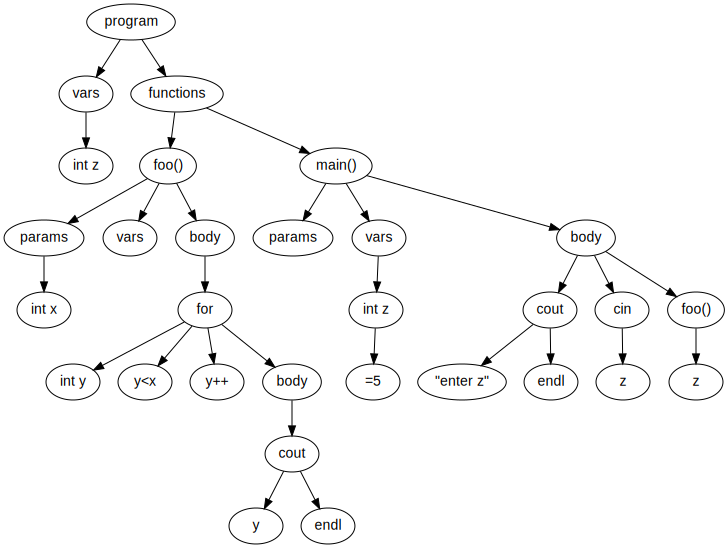

Midterm 2 Lecture Notes
CS 2150
1 Trees
1.1 Binary Search Trees
1.1.1 Relationship between \(H\) and \(N\)
- Given \(n\) nodes and height \(h\), then by the claim \(n \leq 2^{h+1}=1\)
- We can simplify:
- \(n+1 \leq 2^{h+1}\)
- \(\log_2(n+1) \leq \log_2(2^{h+1})\)
- \(\log_2(n+1) \leq h+1\)
- Thus, \(h \geq \log_2(n+1)-1\)
- This means that the shortest tree we can achieve for \(n\) nodes is proportional to the base-2 log of the height
1.1.2 Perfect binary tree
- All leaves have the same depth
- And all nodes have 0 or 2 children (not 1)
- Number of leaves: \(2^h\)
- Number of nodes: \(1 + 2 + 2^2 + 2^3+ \dots + 2^h = 2^{h+1}-1\)
- Problem: a perfect binary only holds \(2^{h+1}-1\) values
- So you can’t have 5 values in a perfect binary tree
1.2 Expression Trees
- A way to keep an internal representation of a mathematical equation
- Allows a computer to compute the value of each node
1.2.1 Expression tree traversals
- Infix notation: (a + ((b + c) * d))
- Postfix notation: a b c + d * +
- Prefix notation: + a * + b c d
1.2.2 Building an expression tree
- Read tokens from input
- If a number or variable, push onto stack
- If an operator, pop off two values, attach them as children of the operator, and push back onto stack
- Proper postfix expression only has one value in stack once complete
Example
Consider the postfix expression a b + c d e + * 1. Read a, push onto the stack 2. Read b, push onto the stack 3. Read +, pop off a and b, put them as children of +, and push back onto stack 4. Read c, push onto the stack 5. Read d, push onto the stack 6. Read e, push onto the stack 7. Read +, pop off d and e, put them as children of +, and push back onto stack 8. Read , pop off + and c, put them as children of , and push back onto stack 9. Read , pop off * and +, put them as children of *, and push back onto stack
This is the final result, as there is only one value left in the stack.
1.3 AVL Trees
1.3.1 Basics
- Motivation: to guarantee \(\Theta(\log n)\) running time on find, insert, and remove
- Idea: keep tree balanced after each operation
- Solution: AVL trees
1.3.2 Structure Property
- For every node in the tree, the height of the left and right sub-trees differs at most by 1
- Height = root to most distant leaf
- If we keep inserting things in left or right subtree, they must be rebalanced
- Essentially is a binary search tree, but it gets rebalanced if the heights differ by at most 1 (1 difference is ok).
1.3.3 Balance Factor
- Each node of a BST holds:
- The data
- Left and right child pointers
- Possibly a parent node pointer
- An AVL tree also holds a balance factor
- The height of the right subtree minus the height of the left subtree
- We could have it be left minus right, but the convention in this class is to always have it be right minus left
- Can be computed on the fly, as well, but that’s VERY slow, and defeats the purpose of using AVL trees for speed
- The height of the right subtree minus the height of the left subtree
1.3.4 Tree Balance
- “Balanced” trees
- 0 means balanced
- 1 means the right subtree is one longer than the left subtree
- -1 means the left subtree is one longer than the right subtree
- “Unbalanced” trees
- A balance factor of -2 or 2
- We’ll fix the tree
- Will we ever hit -3 or 3?
- No, because we immediately fix it after each operation if it reaches -2 or 2
- By definition, a BST is a valid AVL tree if the balance factor for EVERY node is -1, 0, or 1
- The balance factor is tracked for every node individually, so some can be balanced while others can be unbalanced
1.3.5 Find, insert
- find: same as BST find
- insert: same as BST insert, except might need to “fix” the AVL tree after the insert (via rotations)
- Runtime analysis:
- \(\Theta(d)\), where \(d\) is the depth of the node being found/inserted
- What is the maximum ehight of an \(n\)-node AVL tree?
1.3.6 Tree operations
- Perform the operation (insert, delete)
- Move back up to the root, updating the balance factors
- Why only those nodes? Because those are the only ones who have had their subtrees altered
- Do tree rotations where the balance factors are 2 or -2
1.3.7 How many times to “fix” the tree?
- Any single insert will only modify the balance factor by one
- So we fix the lowest off-balance nodes
- Then everything above it is then balanced
- This means that we will have to only look at the bottom two unbalanced nodes
1.3.8 AVL Insert
Let \(x\) be the deepest node where inbalance occurs
Four cases where the insert happened:
- In the left subtree of the left child of \(x\)
- In the right subtree of the left child of \(x\)
- In the left subtree of the right child of \(x\)
- In the right subtree of the right child of \(x\)
Cases 1 and 4
- Perform a single rotation
Cases 2 and 3
- Perform a double rotation
1.3.9 AVL single right rotation
- On a tree with root 3 (-2), left child 2 (-1), left child to that 1 (0):
- The node just inserted was node 1
- The lowest node, immediately after the insert, with an inbalance is node 3
- Because node 1 is in the “left subtree of the left child” of node 3, this means we need to perform a single right rotation
- We end with a tree with 2 as root (0), with left child 1 (0) and right child 3 (0)
- This was “rotated” once to the right
- Left got too heavy (number was negative), rotate to right to balance
1.3.10 AVL single left rotation
- Mirror image of the single right rotation
- On a tree with root 1 (+2), right child 2 (+1), right child to that 3 (0):
- The node just inserted was node 3
- The lowest node, immediately after the insert, with inbalance is node 1
- Because node 3 is in the “right subtree of the right child” of node 1, this means we need to perform a single left rotation
- We end with a tree with 2 as root (0), with left child 1 (0) and right child 3 (0)
- This was “rotated” once to the left
- Right was too heavy (number was positive), rotate to left to balance
1.3.11 Side-effect of tree rotations
- At least one node moves “up” (depth decreases)
- At least one node moves “down” (depth increases)
1.3.12 Double rotation
- Two single rotations, in different directions!
1.3.13 Runtime Analysis
- Find
- \(\Theta(\log n)\) time
- Height of tree is always \(\Theta(\log n)\)
- Insert
- \(\Theta(\log n)\) time
- find() takes \(\Theta(\log n)\), then may have to visit every node on the path back up to root to perform up to 2 single rotations
- Remove
- \(\Theta(\log n)\) time
- Left as an exercise
- Print
- \(\Theta(n)\) time
- No matter the data structure, it will still take \(n\) steps to print \(n\) elements
1.4 Recursion
1.4.1 Sum the numbers from 1 to \(n\)
- We can do this iteratively
int sum (int n) {
int s = 0;
for ( int i = 1; i <= n; i++ )
s += i;
return s;
}- OR we can do this recursively
- What problems arise?
int sum (int n) {
return n + sum (n-1);
}- Recursion always needs three things to work
- A way to make the problem simpler or smaller
- A way to detect when it should terminate or end
- A way to terminate or end
- (the last example didn’t end)
- Now, let’s do the last example correctly
unsigned int sum (unsigned int n) {
if (n == 0)
return 0;
else
return n + sum (n-1);
}- Negative numbers break this, which is why
unsignedwas added
1.4.2 Factorial via recursion
unsigned long fact (unsigned long n) {
if (n == 0)
return 1;
else
return n * fact (n-1);
}1.4.3 Pros and cons
- Pros
- It’s a more natural way to think about the problem, as you only focus on one “instance”
- Some problems work well with recursion, but not with iteration (like tree traversals)
- Cons
- Invokng a subroutine at each step slows performance
1.4.4 Fibonacci Sequence
unsigned int fib (unsigned int n) {
if ( n <= 1 )
return 1;
else
return fib(n-1) + fib(n-2);
}- This is incredibly inefficient, it is much quicker to do this in a while loop
1.4.5 Recursion on trees
void func (BinaryNode *node) {
if ( node == NULL )
return;
func (node->left);
do_something_with_node_value (node);
func (node->right);
}- You cannot traverse a tree via iteration (not easily at at least…)
1.4.6 Recursion on lists
bool is_in_list (int x, ListNode *l) {
if ( l == NULL )
return false;
else if ( x == l->value )
return true;
else
return is_in_list (x, l->next);
}- It would probably be better with iteration, but this just shows recursion is possible
1.4.7 Tail recursion
- The non-tail recursive version of sum():
unsigned int sum (unsigned int n) {
if ( n == 0 )
return 0;
else
return n + sum (n-1);
}- Note that after the recursive call is completed, then we have to do something else
- We need to keep track of n, and then we need to add them together and return that value
- This is a performance penalty
- Compare this to the tail recursive version of sum():
unsigned int sum (unsigned int n, unsigned int s) {
if ( n == 0 )
return s;
else
return sum (n-1, n+s);
}- The recursive call is the only thing returned by this call
- Whatever return returns is the only thing we worry about
- We don’t have to do anything else to it
- The recursive call can replace the return of the one-level-up call
1.4.8 Why tail recursion?
- Compilers recognize tail recursion and turn it into a for loop
- And then optimize, so there is no subroutine invocation penalty
- We get to write as recursion with speed benefits of iteration
- Not all problems can be solved with tail recursion, but for example the list recursion example was tail recursive
1.4.9 Factorial via Tail Recursion
unsigned long fact_tr (unsigned int n, unsigned long s) {
if ( n == 0 )
return s;
else
return fact_tr (n-1, n*s);
}
unsigned long fact (unsigned int n) {
return fact_tr (n,1);
}1.5 Red-black trees
- Always used instead of AVL trees
- Each node has a color attribute, with is either red or black
- Saved as a bool, probably
1.5.1 Properties
- A node is either red or black
- The root is black
- All leaves are black
- The leaves may be the NULL children
- Both children of every red node are black
- Therefore, a black node is the only possible parent for a red node
- Every simple path from a node to any descendant leaf contains the same number of black nodes
- Counting or not counting the NULL black nodes, it doesn’t make a difference as long as you are consistent
1.5.2 Insert
- Insert the node as for a normal BST
- Color it red
- 5 possible cases:
- The new node is the root node
- Thus, must be painted black, as per rule 2
- This adds a black node to every path in the tree, so property 5 still holds
- The new node’s parent is black
- Property 4 is not invalidated
- Property 5 is not threatened
- The new node’s children are black, but that’s the same number of black nodes as the node it replaced
- Both the parent and uncle are red
- We change grandparent to red
- Parent and uncle change to black
- Property 5 still holds
- However, grandparent may threated property 2 or 4
- Recursively do this on the grandparent
- Occurs prior to any rotations
- We change grandparent to red
- Parent is red, uncle is black, new node is the right child of parent
- Perform a left rotation on P and N
- Property 4 is still violated
- Now treat it as case 5
- Perform a left rotation on P and N
- Parent is red, uncle is black, new node is the left child of parent
- Perform a right rotation on P and G
- This satisfies properties 4 and 5
- The new node is the root node
1.5.3 Removal
- Do a normal BST remove
- Find next highest/lowest value, put its value in the node to be deleted, remove that highest/lowest node
- That node won’t have 2 children
- We replace the node to be deleted with left child
- This child is N, sibling is S, parent is P
- Find next highest/lowest value, put its value in the node to be deleted, remove that highest/lowest node
- 6 possible cases
- N is the new root
- S is red
- P, S, and S’s children are black
- S and S’s children are black, but P is red
- S is black, S’s left child is red, S’s right child is black, and N is the left child of its parent
- S is black, S’s right child is red, and N is the left child of parent P
1.5.4 Why red-black vs AVL?
- AVL trees are more rigidly balanced than red-black trees
- More rotations required
- Time-critical applications have a performance boost
- Functional programming languages use red-black trees for hashes/associative arrays
1.6 Splay Trees
- A self-balancing tree that keeps “recently” used nodes close to the top
- This improves performance in some cases
- Great for cashes
- Not good for uniform access
- Easier to implement than red-black or AVL trees
1.6.1 Main operation: splaying
- Anytime you find/insert/delete a node, you splay the tree around that node
- Perform tree rotations to make that node the new root node
- Binary search tree find
- Then, rotate that node to the top of the tree
- Then, just look at the root
- Perform tree rotations to make that node the new root node
- Animation site
- This is good, as the most recently looked up node is at the root, and nodes that have been recently looked for are near the root
- If a value is not found, the tree rotates around where the note would be
- If inserting a node, find where it would be, insert, then splay to make the inserted node the root
1.6.2 Time complexity
- How long does a splay take?
- \(\Theta(h)\), where \(h\) is the height of the tree
- A splay tree can look like a linked list
- Which means the worst case running time can be linear, and the running time can be \(\Theta(n)\)
- A splay tree is \(\Theta(\log n)\) amortized time
- This means a sequence of operations will average to \(\Theta(\log n)\) time
1.6.3 Amortized analysis
- An AVL tree will take \(\Theta(\log n)\) time for each and every operation in a series of \(m\) operations, guaranteed
- A splay tree will take an average of \(\Theta(\log n)\) time for the same set of \(m\) operations
- Some individual ones will take less time
- The total cumulative time to insert a set of elements will be the same for both types of trees
- Consider a vector insert
- Worst case is that you have to double the size of the array (from \(n\) to \(2n\)), and then copy the elements over, which takes \(n\) steps
- This doesn’t happen often though
- Consider a vector of initial capacity 100 elements, in which we insert 1,600 elements
- \(n\) = 1600
- First “doubling” is from 100 \(\rightarrow\) 200, costing 100 copies
- Second is 200 \(\rightarrow\) 400, costing 200 copies
- Third is 400 \(\rightarrow\) 800, costing 400 copies
- Fourth is 800 \(\rightarrow\) 1600, costing 800 copies
- Assume we have not (yet) doubled from 1600 \(\rightarrow\) 3200
- For 1,600 elements, we have 100+200+400+800=1500 copies
- \(n\) elements requires \(n-100\) copies
- Number of copies is proportional to \(n\)
- Vector insert is
- \(\Theta(n)\) for the worst-case
- \(\Theta(1)\) amortized when executing many operations
- Although an individual operation may take \(n\) steps, a series of \(c\) operations will take \(c \cdot n\) steps
- Where \(c\) is constant
- And when you divide by \(n\), then each operation takes an average of \(c\) steps
1.6.4 Splay tree conclusions
- Pros
- Easy to implement
- \(\Theta(\log n)\) amortized time
- Good for caches where locality matters
- Cons
- Not guaranteed \(\Theta(\log n)\) time for a single operation
- Bad access time for uniform access
1.7 Tree applications
1.7.1 When are trees not good to use?
- They’re fast, so when would we NOT want to use them?
- When the items don’t have a sorted order
- Ex. a list of to-do items
- When we want less complexity
- Ex. a stack or queue
- When we want \(\Theta(1)\) operation on retrieves
- Vector get()
- When we want \(\Theta(1)\) time for all operations
- Hash tables almost achieve that
- When the items don’t have a sorted order
1.7.2 Programs
- Any program can be represented as a tree
- Consider the following program:
int z;
int foo (int x) {
for ( int y = 0; y < x; y++ )
cout << y << endl;
}
int main() {
int z = 5;
cout << "enter x" << endl;
cin >> z;
foo(z);
}- Note that there are two
int zdeclarations- One in main
- One global
- As a tree, it looks like this:

The Program Tree
- This is called an “abstract syntax tree” or “parse tree”
- Each note can be a different type
- Having different propreties and different number of children
- A
forloop node has four children - A function node has at least three children
- A body node has a variable number of children
- A
- Done through inheritance
- Having different propreties and different number of children
- A compiler will build this tree in memory
- And trasverse it many times
- For example, to figure out which
zto use - Or for code generation
- Or for type checking
- Or for code optimization
- For example, to figure out which
- And trasverse it many times
1.7.3 Comparing two programs
- If we read in two programs and built parse trees for each, then compared their structure,
- We would be able to compare the programs while ignoring
- Function/method order
- Variable renaming
- Different comments
1.7.4 Measure of Structural Similarity
- “MOSS”
- A system for detecting software plagiarism
- Loads up all the programs for a class
- Do all \(n^2\) comparisons
- Display the most similar programs